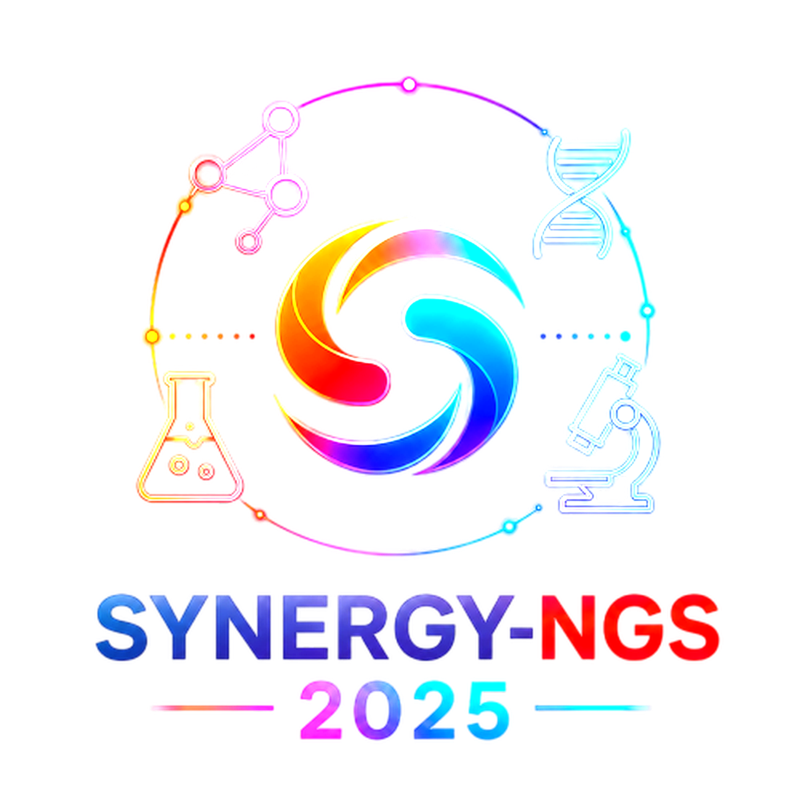

Protein annotations
Inspect family assignments, domain architecture, motifs, predicted localization and supporting evidence.
Comparative parasite proteomics
Explore integrin adhesion and candidate adhesome proteins across seven Schistosoma species. The Atlas connects protein annotations, comparative genomics and interaction evidence to identify conserved families and prioritize candidates for schistosomiasis research.
Open the interactive Atlas
Inspect family assignments, domain architecture, motifs, predicted localization and supporting evidence.
Compare copy profiles and evolutionary relationships among candidates and reference proteins.
Explore family connections, open candidate profiles and simulate predicted downstream effects.
The Atlas differentiates computationally inferred family-level interactions from experimentally validated associations. Network-based projections and simulations provide a hypothesis-generating framework to guide future experimental investigation.